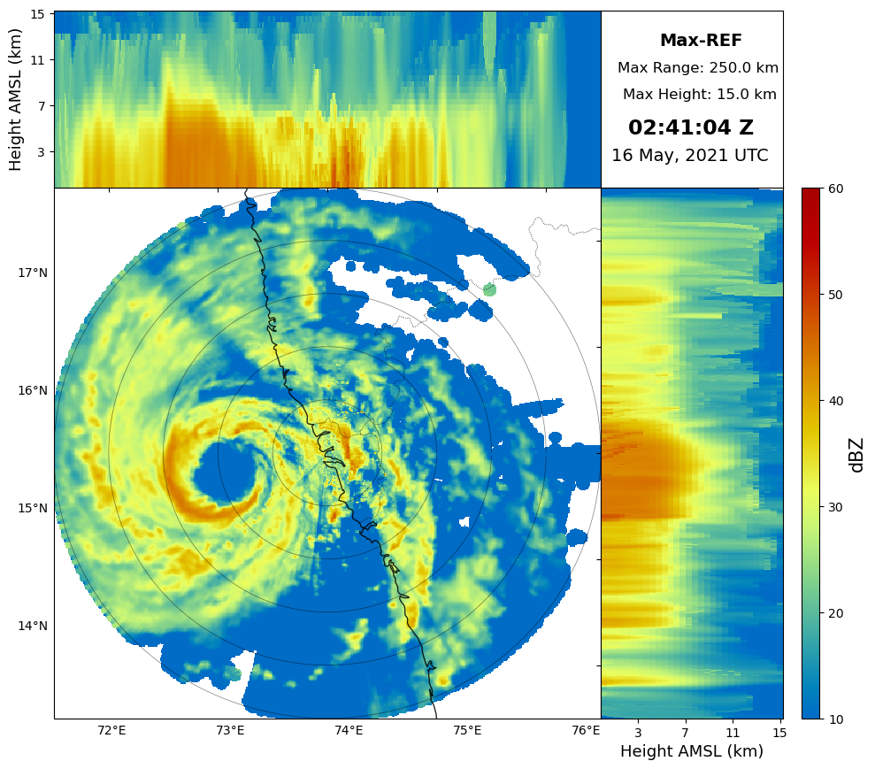

PyScanCf: A Library for IMD Weather Radar Data#
Release: {{release}}
Date: {{today}}
Welcome to PyScanCf’s documentation!#
Go to syedhamidali/pyscancf_examples for latest examples and instructions
Warning
This library is under heavy development.
Contents

What is PyScanCf?#
Creates Py-ART compatible cf-radial data from individual sweeps of Indian Meteorological Department (IMD) Radar data
Description#
PyScanCf is a library for creating cfradial (polar) data from IMD radars that contain all 10 sweeps from single scans which are named as (Polar_ABC.nc) as well as gridded radar data from which are named as (grid_ABC.nc). Both formats are compatible for PyART. It uses Pyart to create grid data, so please remember to cite Py-ART as well.
Installation#
Installing PyScanCf from source is the only way to get the latest updates and enhancement to the software that have not yet made it into a release. The latest source code for PyScanCf can be obtained from the GitHub repository, syedhamidali/PyScanCf.git.
How to install:
conda create -n pcf python=3.9 jupyter arm_pyart pandas wradlib git -c conda-forge
conda activate pcf
pip install git+https://github.com/syedhamidali/PyScanCf.git
Or, to install in your home directory, use:
git clone https://github.com/syedhamidali/PyScanCf.git
python setup.py install --user
Or, Install via pip:
pip install pyscancf
Citation#
Syed, H. A., Sayyed, I., Kalapureddy, M. C. R., & Grandhi, K. K. (2021). PyScanCf – The library for single sweep datasets of IMD weather radars. Zenodo. DOI:10.5281/zenodo.5574160.
PyScanCf Tutorial on Youtube#
Quick Usage#
Import Library:
import pyscancf as pcf
import pyart
import glob
Mention the data path:
inp = "../imd_temp_radar/B/"
out = "../imd_temp_radar/out/"
Convert data to cfradial, and gridded format:
pcf.cfrad(input_dir=inp, output_dir=out, scan_type="B", gridder=True)
output:
Number of files: 20
Total number of files will be created: 2
Merging all scans in one file
Data merging done
Total Time Elapsed: 0:00:35.931653
Plot Cappi:
files = glob.glob(out+"grid*")
for file in files:
grid = pyart.io.read_grid(file)
pcf.plot_cappi(grid, "REF",
cmap="pyart_HomeyerRainbow", #optional
crosshair=False, #optional
savedir=out) #optional
And you’ll see the beautiful gridded data plot in your notebook, the figures will be saved in the directory from where you launched the notebook

Latest Examples#
Notebooks syedhamidali/pyscancf_examples